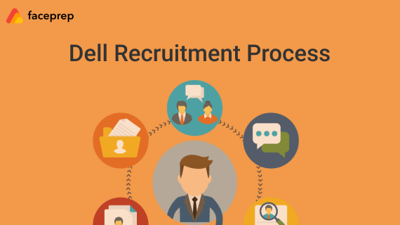

Dell Recruitment Process for Freshers
| Dell Selection Proces
Published on 09 Mar 2020
About Company
Explore 'DELL'
Dell recruitment process for freshers is given below. Also, job roles offered by Dell for freshers,
their selection process, documents required are all discussed in this article.
Dell is an IT company established in Palo Alto, California, US.The salient province of Dell
is that it
dispenses
technology solutions and services to clients that may comprise of small and medium-sized enterprises, large
enterprises,
health and education sectors, etc.
Job Roles offered by Dell for Freshers
The job roles offered by Dell for freshers both on-campus and off-campus are given below.
| Job Role offered | CTC | Skills Required |
|---|---|---|
| Software Engineer | 6 – 8 LPA | Good knowledge of programming languages(C, C++, Java) Knowledge of operating systems; firmware; BIOS; device drivers; databases; system, network, operating system, and application; embedded software/firmware; tools and utilities, as applicable Good knowledge of VBScript, PowerShell scripts Able to code/debug moderately complex programs using either written or verbal design specifications |
Eligibility Criteria
1.B.Tech in CSE, IT, or any other CS related branches.
2.A candidate should have passed with at least 60% in Class X & XII.
3.The candidate should have graduated with at least 70% in UG (Pursuing Degree)
4.The candidate should not have any current backlogs.
5.A gap in education up to 1 year is allowed, not more than that.
Dell Recruitment Process

Dell recruitment process for freshers is given below. The procedure of choosing candidates
focuses on abilities, knowledge, skills, experience and several other related factors. The stages
of the selection process to get recruited in Dell are as follows
Online/Written Exam
The pattern for Dell online test for freshers is as follows. There are four sections in the exam.
These sections comprise questions from Quantitative Aptitude, Analytical ability, Verbal Ability, and
Technical section. When it comes to the technical section, then it has got quite tough questions based on
c
language and other technical concepts. To crack this section, candidates should be very clear with their
concepts.
| Section | Number of Questions | Time Limit (in mins) |
|---|---|---|
| Quantitative Aptitude | 20 | 20 |
| Analytical Reasoning | 15 | 15 |
| Verbal Ability | 15 | 15 |
| Technical | 40 | 40 |
Technical Interview
In the technical interview, Dell majorly focuses on the core CS subjects like Data Structures and
Algorithms, Operating Systems, Computer Networks, C++ concepts, and DBMS. You need to be very well prepared
to answer questions from these subjects.
In case you are a non-CS student, then you need to be very clear with your programming basics. You are not
expected
to write codes for complex problems but, you should at least be able to think through the logic and convey
it
to
the
interviewer. This will help the interviewer understand your logical thinking skills.
HR Interview
HR interview is the final phase of the selection process. Questions asked in this round can be of
all-inclusive
starting
from your preface, qualification, experience, industry definite experience, courses you have done, your
strengths
and weaknesses,
family background etc.
Always be prepared to face the basic HR interview question. Want to know what kind of questions are asked?
Then,
check here -
Note:Dell also conducts a group discussion round during its off-campus drive. So be
prepared
for
it as well.
Required Skills for Dell Software Developer Role
Candidates should have the below skills to attend Dell recruitment process.
1.The candidates should have the potential to take initiatives and should acquire complete
knowledge on the
subject
2.The candidates should be adept abundant
3.Should have the trait of managing the stress at work time as it will play a major role in work
efficiency
4.Adaptability at any abode must be in the candidates
5.Should grasp contemporary programming languages
6.Should work on recent software
7.Should be potential to work in any situation
8.Good communications Skills (written and verbal)
9.Good team player with a zeal to learn/work and flexible to work on different software
technologies
10.Self-driven (aspiration to grow/improve)
11.Should have a very good attitude and flexibility to work in any area
12.Educational background in Computer Software, Information Technology, Electronics and
Communications.
Documents Required for Interview
Candidates are supposed to bear the following documents during the Dell Campus Drive:
1.The latest updated Resume
2.Recent two passport size photos
3.Mark Sheets of candidates all through the education from 10th to graduation.
Tips to crack the Dell Recruitment Procedure
There is no doubt about the fact that getting a job in the private sector has become more complicated these
days.
So many eligible and capable candidates can attend both the On-Campus and the Off-Campus Placement Drives of
Dell.
Applicants who have the required qualifications and are interested to shape their career can go through the
following tips:
1.You need to be equipped with the proper knowledge of at least one programming
languages.
2.basic knowledge of testing tools and test scripting is required.
3.Verbal and written communication skills should be proficient.
4.You need to develop the flexibility to work for longer durations.
5.Go through the past Dell placement papers of the company.
6.Do not get demotivated in case you are unable to answer a few questions in the
interview.
7.Get in touch with a few seniors working in the company for further guidance.
| Dell |
|---|